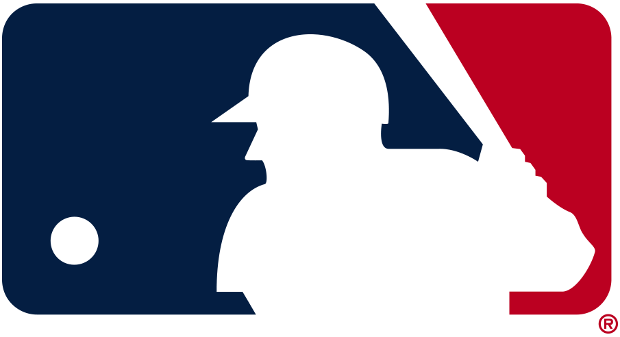

MLB Win-Loss Visualizer
Visualizing the year over year win-loss records of Major League Baseball teams from 1894 to present.
Select team:
Arizona Diamondbacks
Atlanta Braves
Baltimore Orioles
Boston Red Sox
Chicago Cubs
Chicago White Sox
Cincinnati Reds
Cleveland Indians
Detroit Tigers
Houston Astros
Kansas City Royals
Los Angeles Angels
Los Angeles Dodgers
Miami Marlins
Milwaukee Brewers
Minnesota Twins
New York Mets
New York Yankees
Oakland Athletics
Philadelphia Phillies
Pittsburgh Pirates
San Diego Padres
San Francisco Giants
Seattle Mariners
St. Louis Cardinals
Tampa Bay Rays
Texas Rangers
Toronto Blue Jays
Washington Nationals
test2
Data Sources
The following sources were used in the creation of this infographic.
Baseball-References.com
MLB
Sports Logos